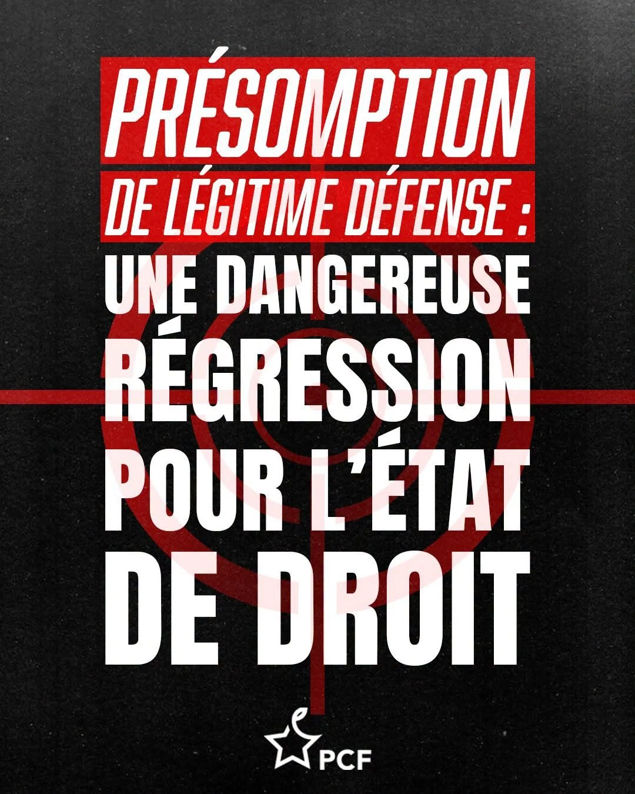

Partage du PCF national
Le PCF appelle à saisir le Conseil constitutionnel sur l’usage des armes par les forces de l’ordre
Date indiquée par Facebook · 21 novembre 2026
Publication originale du PCF national
🚩 Avec le soutien du gouvernement, la droite et l’extrême droite ont fait adopter une loi qui présume légal l’usage des armes par les forces de l’ordre. C’est un recul grave pour l’État de droit et pour les droits des victimes.
📢 Nous voulons une police républicaine de proximité, mieux formée, avec les effectifs et les moyens de protéger la population. Quand un policier fait usage de son arme, les victimes et leurs proches ont droit à la vérité et à la justice. Nous appellons à saisir le Conseil constitutionnel.
🔗 Retrouvez notre communiqué complet en commentaire.
Repères éditoriaux
Le PCF dénonce le texte adopté le 20 novembre et défend une police républicaine de proximité. Dans son communiqué du 21 novembre, il demande la saisine du Conseil constitutionnel et rappelle le droit des victimes et de leurs proches à la vérité et à la justice.

Sources
PCF national · publication relayée par le PCF 79 · fil Facebook · FB-1476325024680746
À lire aussi · Loi intégrale contre les violences sexistes et sexuelles : de premières victoires et une lutte qui doit se poursuivre